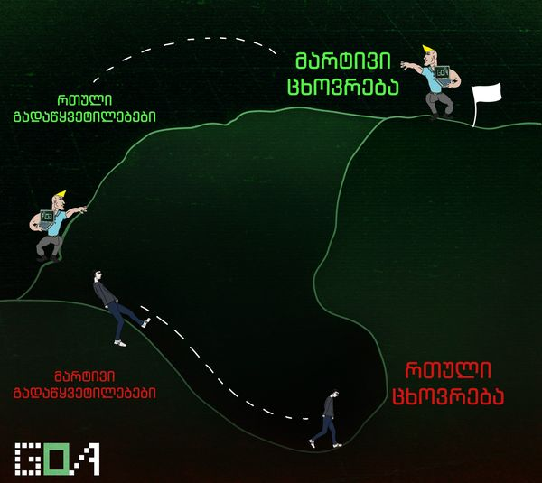

Welcome to Goal Oriented Academy, or for short, GOA.
GOA is an amazing academy in Georgia where you could learn programming to build a better life for yourself and create a proper future.
In GOA, you can also learn more than just programming, as long as you are willing to commit to it and not be lazy!
My personal experience in GOA has been wonderful, with it not only being convenient, but also developing myself at a young age to be ready for the future.
While i do have my ups and downs, sometimes being lazy and doing homework the very last day before our next lesson, i still learn something new from all of this, and i am very grateful that i signed up.

Do you happen to be one of those young teenagers spending all of your free time endlessly playing something over and over with no benefit, and only dragging yourself down further?
If you said yes, there's your answer
If you still need more convincing, heres why you should join:
As i stated above, GOA focuses on teaching programming, along with many other things which could be insanely useful in life. programming as of today is the most demanded job, as our society begins to rely more and more on technology.
With this fact in mind, here in GOA everything is explained to the absolute fullest, with the mentors making sure you understand whats going on, and even then, you can ask anyone else for help.